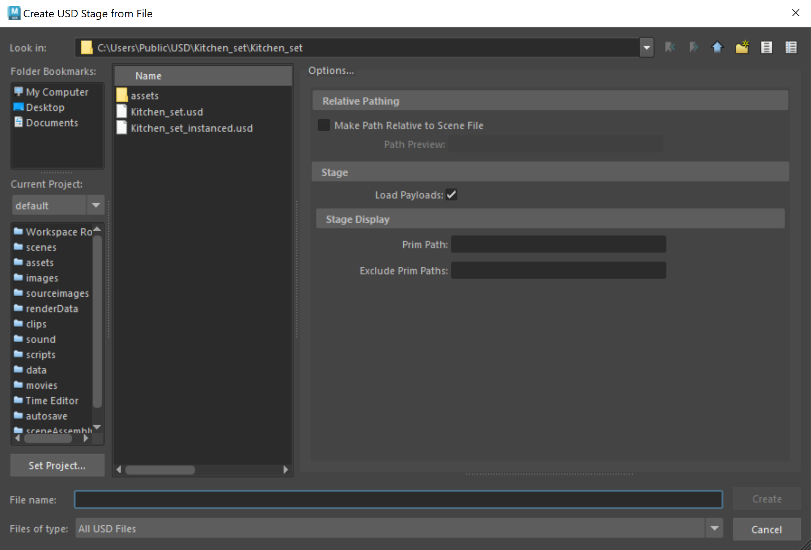

Create a USD stage from file
Unlike importing a USD file, creating a stage from file lets you use existing USD data without converting it into a native Maya format. With this method, Maya creates a proxyShape node, which points to the USD file. This allows USD data to persist in memory, letting you take advantage of all the benefits of USD, like fast playback and load times while working alongside Maya data (ie. facilitating the mixed data model). You can edit layers in your existing USD stage with the USD Layer Editor. You can also select any USD prim displayed under the proxyShape stage node in the Outliner and use the Attribute Editor to edit it.
To create a USD stage from an existing file on disk
Do one of the following:
In the USD Layer Editor, Create > Stage from File (recommended)
Note: To open the USD Layer Editor, Select Windows > USD Layer Editor.Create > Universal Scene Description > Stage from File
In the Create USD Stage from File window that appears, you can select a USD file and set the following USD File Options:

Important: If you have Windows > Settings/ Preferences > Preferences > Files/ Projects > File Dialog set to OS Native, you will see your operating system's file browser instead of this dialog. In this case, to access the USD File Options settings, click Create > Universal Scene Description (USD) > Stage from File > .
. Relative Pathing
- Make Path Relative to Scene File: Save an anonymous root layer relative to your Maya scene file and sublayers relative to parent layers. To enact this, ensure you save your Maya scene file to disk when you toggle this setting on to enact your relative pathing selections. To learn more about saving USD files relatively, see Make Path Relative.
Stage
- Load Payloads: When on, loads all prims marked as payloads. When off, all prims marked as payloads and their children are not loaded.
Stage Display
- Prim Path: Loads the specified prim path. If a matching prim path is not found, all prims in the file are loaded.
- Exclude Prim Paths: Excludes the specified prim paths from the loaded USD data. Multiple prim paths must be separated by a comma.
Once you are done making changes, click Create.
Note: .usd , .usdc, and .usda are supported file formats.The following occurs:
A
proxyShapenode is created and appears in the Outliner as the stage. For example, if kitchen_set.usd is selected, the proxyShape node is calledkitchen_set. If an existing proxyShape with the same name already exists, then a "1" is appended to the name: for example,kitchen_set1. If the filename is invalid,mayaUSDProxyShapeBaseis used.In the Outliner, right-click a prim to access the commands in the contextual menu. See Work with USD data in the Outliner.
Further editing